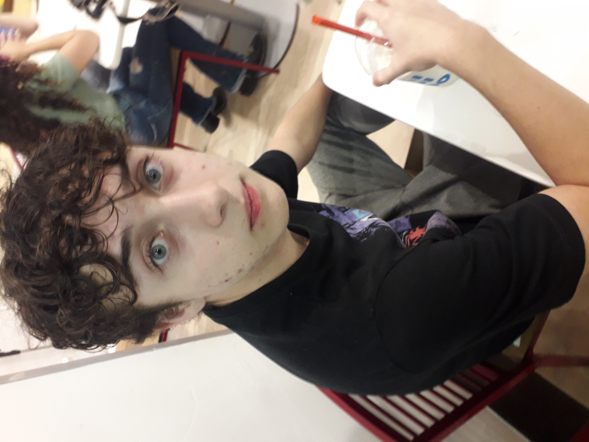
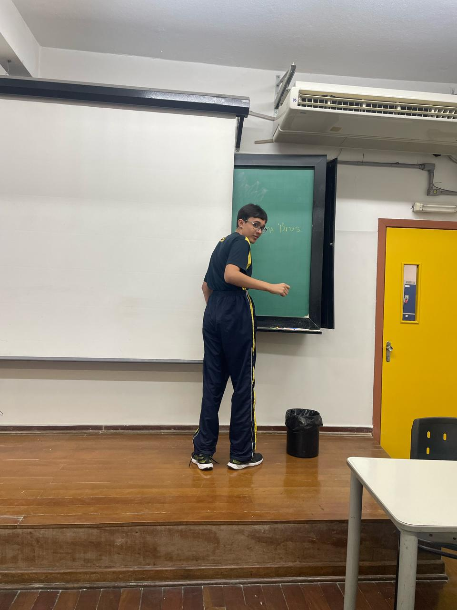
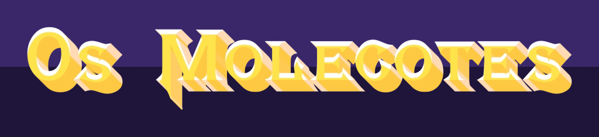

Os Molecotes é um beat-em-up 8-bit na qual o jogador assume o controle de um entre 3 personagens, que compõem o icônico grupo de aventureiros conhecido como "Os Molecotes". Guiados pelo jogador, El Moreno, Hector ou Jackson devem salvar seus amigos das garras do temido Mago Wal.
Os Desenvolvedores;Felipe Moreno Rocha da Siva
Heitor Braga Souza

Flávio Franzolim Filho
Lorenzo Gaeta
A desenvolvedora independente "FafeHelo" crious 'Os Molecotes' como um projeto escolar e uma forma de dar vida a uma das muitas histórias internas desenvolvidas pelo grupo. O jogo apresenta a jornada dos poderosos 'Molecotes', um grupo de jovens aventureiros que se vêm em perigo quando um de seus membros, o poderoso Mago Wal, é corrompido contra o grupo... Agora, escolhendo seu personagem, o jogador deve se aventurar com um dos 3 Molecotes à sua escollha para salvar seus amigos e derrotar o Mago Wal.
Site desenvolvido pela atual equipe FafeHelo: Felipe Moreno Rocha da Silva, Heitor Braga Souza e Carlos Eduardo Pires Cardozo